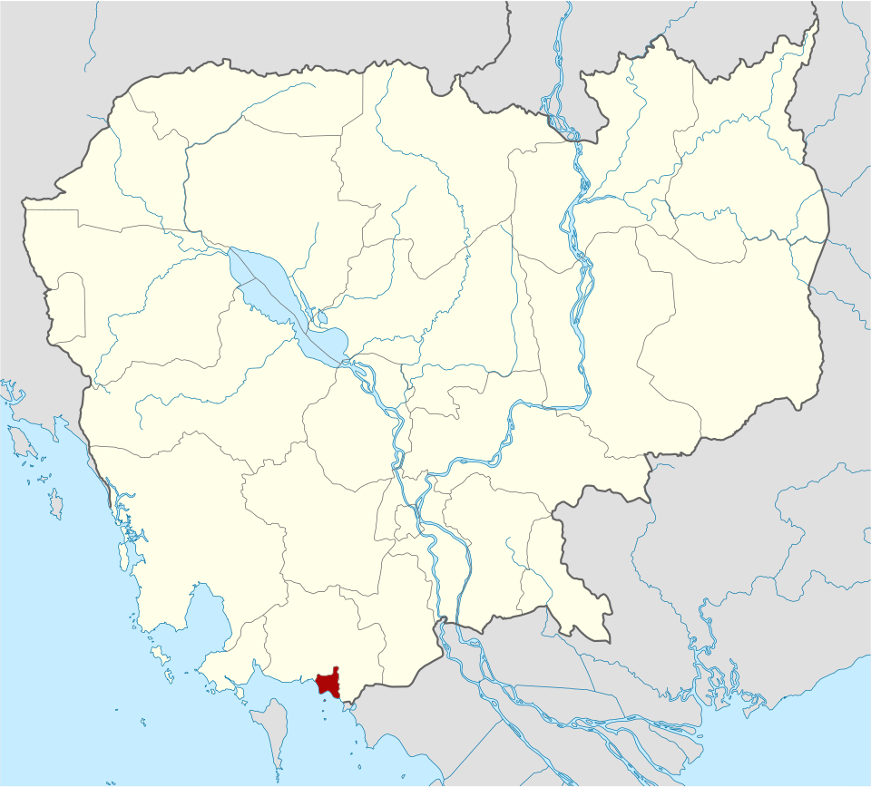
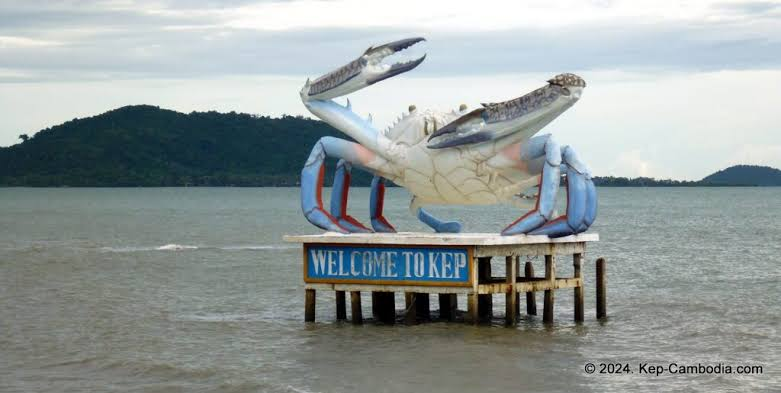
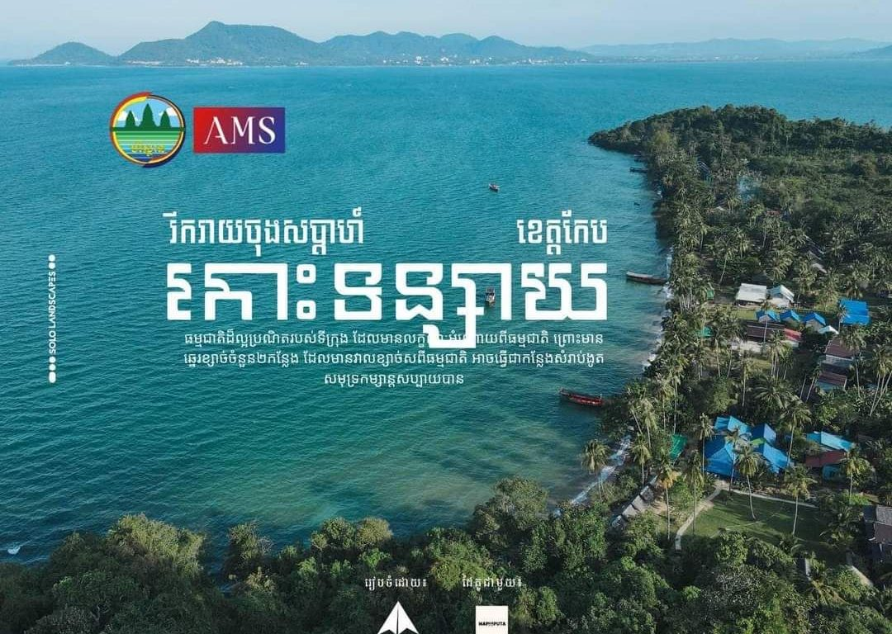
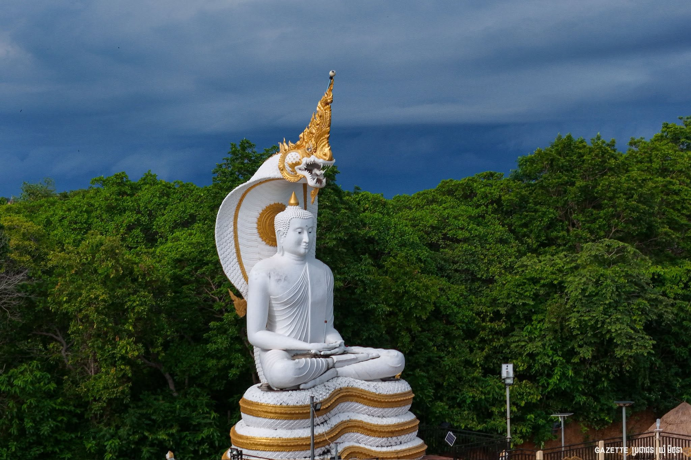

ខេត្តកែប
ខេត្តកែប គឺជាខេត្តតូចជាងគេបំផុតក្នុងប្រទេសកម្ពុជា ដែលមានផ្ទៃក្រឡាចំនួន ៣៣៦គីឡូម៉ែត្រការ៉េ (១៣០ម៉ាញ៍) ដែលមានប្រជាជនចំនួន ៤១ ៧៩៨។ ជាខេត្តមួយក្នុងចំណោមខេត្តថ្មីបំផុតរបស់កម្ពុជា រួមជាមួយនឹងខេត្តប៉ៃលិន ខេត្តព្រះសីហនុ និងខេត្តត្បូងឃ្មុំ ដែលបង្កើតឡើងដោយព្រះរាជក្រឹត្យចុះថ្ងៃទី២២ ខែធ្នូ ឆ្នាំ២០០៨ ដែលបានបំបែកក្រុងកែប និងស្រុកដំណាក់ចង្អើរចេញពីខេត្តកំពត ក៏ដូចជាការកែសម្រួលព្រំប្រទល់ខេត្តមួយចំនួនផងដែរ។ ខេត្តកែបជាខេត្តតូចជាងគេ និងមានប្រជាជនរស់នៅតិចជាងគេបំផុតរបស់កម្ពុជា។ ទីរួមខេត្តគឺក្រុងកែប ហើយខេត្តនេះមានឧទ្យានជាតិកែបថែមទៀតផង។ ខេត្តកែបជាខេត្តជាមួយដែលស្អាតជាងគេនិងភាពទាក់ទាញទៅដល់ភ្ញៀវទេសចរណ៏ឲ្យមកទស្សនាព្រមទាំងមានភាពល្បីល្បាញជាងគេនៅក្នុងប្រទេសកម្ពុជា។ ការយល់ខុស អំពីខេត្តកែបដ៏សំខាន់គឺថាក្នុងអំឡុងពេលប៉ុន្មានឆ្នាំខ្មែរក្រហមជាច្រើននៃទីលំនៅសម័យអាណានិគមបារាំងនិងវីឡារបស់ខេត្តកែបត្រូវបានគេបំផ្លាញចោល។ជាការពិតណាស់ អ្នកស្រុកជាច្រើនត្រូវការប្រាក់និងអាហារដោយបានយកចេញបានធ្លាក់ចុះវីឡាដូច្នេះពួកគេអាចផ្លាស់ប្តូរផ្នែកដ៏មានតម្លៃទាំងអស់ទាំងនេះនៅក្នុងប្រទេសវៀតណាមសម្រាប់ អង្ករនិងសាច់ប្រាក់។ មនុស្សជាច្រើន នៃវីឡារបស់ខេត្តកែបត្រូវបានបោះបង់ចោលប៉ុន្តែមួយចំនួននៃទីក្រុងរបស់អតីតរុងរឿងគឺនៅតែច្បាស់។សាលារៀនសម្រាប់ការអប់រំ កម្រិតមធ្យមសិក្សាត្រូវបានគេដឹងថាមានទីតាំងស្ថិត នៅក្នុងខេត្តមានចំនួន588សិស្សនិស្សិតដែលមានចំនួន246នាក់នារីនៅក្នុងឆ្នាំ2008នេះ។ក្នុងឆ្នាំដូចគ្នានេះដែរមាន9សា លាមត្តេយ្យនិងសាលាបឋមសិក្សា21ដោយមានចំនួនប្រជាជន សរុបចំនួន9.644សិស្សនិស្សិតដែលមានចំនួន4.580នាក់នារីត្រូវបានគេ ។

លក្ខណៈភូមិសាស្ត្រ
ខេត្តកែបគឺជាខេត្តមួយដ៏តូចបំផុតរបស់ប្រទេសកម្ពុជា ដែលគ្របដណ្ដប់ផ្ទៃដីប្រមាណ 336 km2 (130 sq mi) និងមានប្រជាជនចំនួន ៤០ ២៨០ នាក់។ វាគឺជាខេត្តមួយក្នុងចំណោមខេត្តថ្មីៗបំផុតនៃកម្ពុជា រួមជាមួយ ប៉ៃលិន ព្រះសីហនុ និង ត្បូងឃ្មុំ ដែលត្រូវបានបង្កើតឡើងតាមរាជក្រឹត្យថ្ងៃ ២២ ធ្នូ ២០០៨ ត្រូវបានបំបែកចេញពីខេត្តកំពត ស្របនឹងការសម្របសម្រួលព្រំសីមាខេត្តជាច្រើន។ ទីរួមខេត្តគឺក្រុងកែប ហើយក៏មានឧទ្យានជាតិមួយដែរ ដែលគេហៅថាឧទ្យានជាតិកែប។ ខេត្តកែបជាខេត្តមួយក្នុងចំណោមខេត្តទាំង៤ដែលស្ថិតនៅតាមឆ្នេរសមុទ្រភាគនិរតីនៃប្រទេសកម្ពុជា។ ខេត្តកែបស្ថិតនៅមិនប៉ុន្មានសហាតិមាត្រពីព្រំដែនកម្ពុជា-វៀតណាមឡើយ។ ក្រុងកែបធ្លាប់ជាទីក្រុងឆ្នេរសមុទ្រដ៏ពេញនិយមរបស់កម្ពុជា។ ឆ្នេរសមុទ្រនៅក្រុងកែបជាឆ្នេរព្រៃកោងកាង និង គ្រួសខ្មៅៗ ។ក្រុងកែបសំបូរគ្រឿងសមុទ្រថោកៗតែឆ្ងាញ់ ជាពិសេសគឺ ក្ដាមសមុទ្រ។ ខេត្តកែបក៍មាននូវផលិតផលជាច្រើនផងដែរដូចជា ម្រេច អំបិល ផ្លែឈើ ធុរ៉េន ស្វាយ ដូង សាវម៉ាវ ហើយនិងមានតំបន់ទេសចរណ៏ ជាច្រើនដូចជា ឆ្នេរសមុទ្រ ភ្នំ កោះ រូងភ្នំ និងរមណីយដ្ឋានជាច្រើន ។ ជាពិសេសក៍មានសណ្ឋាគារសម្រាប់ ភ្ញៀវទេសចរណ៍ជាតិ និង អន្តរជាតិសម្រាប់ស្នាក់នៅទីនោះផងដែរ។ ទឹកដីកែបហ៊ុំព័ទ្ធទាំងស្រុងដោយខេត្តកំពត លើកលែងតែឆ្នេរសមុទ្រ ១៦ គ.ម. ចេញ នៅខាងត្បូងជាប់ព្រំប្រទល់ឈូងសមុទ្រថៃ និង កោះភូគុក (កោះត្រល់) នៃវៀតណាម។ ព្រំខេត្តខាងលិចមានចម្ងាយ ២០ គ.ម. ពីក្រុងកំពត។ ព្រំខេត្តខាងកើតមានចម្ងាយប្រហែល ២០ គីឡូម៉ែត្រពីព្រំដែនវៀតណាម។


រដ្ឋបាល
ខេត្តកែប ត្រូវបានចែកចេញជា ក្រុង១ និងស្រុក១ ក្នុងនោះរួមមាន ៥ ឃុំ និង សង្កាត់៖
- ស្រុកដំណាក់ចង្អើរ
- ក្រុងកែប
តំបន់ទេសចរណ៍
កោះទន្សាយកោះទន្សាយប្រហែលជាទីទាក់ទាញភ្ញៀវទេសចរណ៍ដ៏សំខាន់នៅក្នុងខេត្តកែប យ៉ាងណាមិញខេត្តរបស់កម្ពុជាដ៏តូចបំផុតមួយនេះមានកន្លែងជាទី ចាប់អារម្មណ៍ជាច្រើនបានលើកកម្ពស់ឱ្យយើងប្រមើលមើលឃើញនូវទស្សនៈវិស័យខាងបរិស្ថានដែលបង្កើតបានជាបរិស្ថានទេសចរណ៍ មិនត្រឹមតែដោយសារ រដ្ឋាភិបាលដែនដីតែប៉ុណ្ណោះទេ ក៏ប៉ុន្តែក៏ដោយសារតែគំនិតផ្ចុងផ្ដើមជាលក្ខណៈឯកជនតាមរយៈសមាគមទេសចរណ៍កែបដែលបានប្រមែប្រមូលបានសណ្ឋាគារ និង ភោជនីយដ្ឋានជាច្រើនក្នុងតំបន់នៃខេត្តនេះ។ ឆ្នេរកែបមានទីតាំងនៅក្នុងក្រុងកែប នៅចុងនៃទៀបកោះកែប។ តំបន់នេះគឺជាទីស្ថាននៃមនុគ្រឹះរបស់បារាំងដែលបាក់បែកជាច្រើន។ ភាគច្រើនជាខ្សាច់ពណ៌ខ្មៅ ដែលបានចាក់បំពេញឡើងវិញជាមួយខ្សាច់សក្បុសពីក្រុងព្រះសីហនុ។ ព្រៃត្រែក មានទីតាំងនៅខាងក្នុងឧទ្យានជាតិកែបដែលមានត្រែក៨សហតិមាត្រការ៉េនៅពាស ពេញប្រជុំកូនភ្នំកែប។ត្រពាំងធម្មជាតិជ្រោះផ្កាម្លិះគឺជារណ្ដៅអាចហែលទឹកបាននៅរដូវវស្សាដែលពោរពេញទៅដោយត្រីខាំជើង។ កាលណាត្រពាំងសើមខ្លាំង ព្រោះតែមានទឹកធ្លាក់ចូលទៅ ក្នុងត្រពាំងនោះ ហើយបង្កើតជាច្រាំងហូរចូលទៅកាន់ប្រភពទឹកធម្មជាតិដែលហូរចុះមកកាន់ជ្រោះនោះ។ វាលរំអិលជ្រោះផ្កាម្លិះគឺជាវាលក្ដាររំអិលតែមួយគត់ក្នុងតំបន់នេះ។ កីឡាកររំអិលមកពី ទូទាំងពិភពលោកមកទីនេះដើម្បីរំអិលក្នុងព្រៃនេះជាមួយនឹងពួកកីឡាកររំអិលកម្ពុជាជំនាន់ទីមួយ។វាលរំអិលជ្រោះផ្កាម្លិះ។ ម៉ាស៊ីន.កសិដ្ឋានមេ អំបៅគឺជាសួនបរិស្ថានវិទ្យាលក្ខណៈឯកជននៅលើផ្លូវលំជ្រោះផ្កាម្លិះដែលបើកឡើងដើម្បីអភិរក្សបរិស្ថានក្នុងតំបន់ដឹកនាំដោយពួកអ្នកមានចិត្តស្រលាញ់មនុស្សធម៌ដែលឃ្លាតឆ្ងាយពីមាតុភូមិរបស់ខ្លួន។ បូជនីយដ្ឋានផ្ទះកំណើតដុនបូស្កូត្រូវបានសម្ពោធឡើងនៅខែ ឧសភា ២០១២ ជាទីសក្ការៈបូជាទៅលោកដុនបូស្កូ និងក៏ជាការបង្កើតឡើងវិញនៃផ្ទះដែលលោកចន-បូស្កូបានចាប់កំណើតនៅឆ្នាំ ១៨១៦ នៅកាស្តិលន័រវ៉ូដុនបូស្កូ អ៊ីតាលី។ ផ្ទះនេះស្ថិតនៅខាងក្នុងនៃបរិវេណមជ្ឈមណ្ឌលបណ្ដុះបណ្ដាលវិជ្ជាជីវៈដុនបូស្កូ។

.jpg)
នៅប្រមាណ ១៤ គីឡូម៉ែត្រពីក្រុងកែប មានរមណីយដ្ឋានមួយទៀតដែលមានឈ្មោះ ថា ភ្នំសសៀរ ភ្នំនេះស្ថិតនៅចម្ងាយប្រហែល ២-៣ គីឡូម៉ែត្រពីរង្វង់មូលសេះស។ នៅទីនោះមានរូងថ្មសំខាន់ៗចំនួនបួន គឺ ល្អាងស្តេចដំរីស ល្អាងវាលស្រែមួយរយ ល្អាងស-ខ្មៅ និង ល្អាងប្រចៀវ។ ល្អាងស្តេច ដំរីស គឺជាល្អាងមួយធំហើយសំខាន់ជាងគេ សម្រាប់គោរពបូជា ព្រោះទីនេះមានថ្មពណ៌ស ដុះដូចរូបសត្វដំរី រីឯល្អាងប្រចៀវនៅផ្នែកម្ខាងទៀតនៃភ្នំ មុននឹងចូលមកដល់ទីនេះលោកអ្នកអាចនឹងឮស្នូរ សំឡេងរងំនៃសត្វប្រចៀវ។វាក៏ជារូងធំហើយជ្រៅ និង មានទឹកខួបប្រាំងខួបវស្សានៅទីនោះ។ ទោះបីទីនេះមានភាពល្បីល្បាញយ៉ាងណាក្តី ក៏ពុំសូវមានទេសចរក្នុងស្រុកទៅទស្សនាច្រើន ប៉ុន្មានឡើយ នៅភ្នំសសៀរនេះ ពោលគឺភាគច្រើនទៅហួសមកហួស ប៉ុន្តែសម្រាប់ភ្ញៀវបរទេសវិញ រមណីយដ្ឋានភ្នំសសៀរ គឺជារមណីយដ្ឋានវប្បធម៌ និង ទេសចរណ៍ដ៏សំខាន់សម្រាប់ពួកគេ ។
រមណីយដ្ឋានទេសចរណ៍ភ្នំពោន ភ្នំពោនជារមណីយដ្ឋានធម្មជាតិមាត់សមុទ្រដែលមានទីតាំងស្ថិត ក្នុងភូមិសាស្ត្រ ភូមិភ្នំលាវ ឃុំពងទឹក ស្រុកដំណាក់ចង្អើរ ទីនេះអំណោយផលល្អសម្រាប់ការកម្សាន្តរប ស់ភ្ញៀវទេសចរណ៍។ ភ្នំពោនមានធម្មជាតិព្រៃព្រឹក្សាយ៉ាងស្រស់បំព្រង មានឆ្នេរខ្សាច់យ៉ាងល្អស្អាតជាប់ មាត់សមុទ្រ និង អាកាសធាតុបរិសុទ្ធបក់មកគ្របដណ្តប់គ្រប់រដូវកាល។ ទិសដៅទៅអនាគត ខេត្តច ង់ប្រែក្លាយឱ្យទៅជាទីសម្រាប់លំហែ និង សាងសង់កំពង់ផែខ្នាតអន្តរជាតិទៀតផង។ អ្វីដែលទន្ទឹងរង់ចាំដំបូងនាពេលនេះ នោះគឺ បញ្ហាផ្លូវសម្រាប់ភ្ជាប់ទីកន្លែងនេះទៅក្រុងកែប និង ផ្លូវសេដ្ឋកិច្ចឆ្ពោះទៅតំបន់ច្រកទ្វារអន្តរជាតិព្រែកចាក។ នៅថ្ងៃអនាគតខេត្តសង្ឃឹមថាតំបន់នេះនឹងក្លាយទៅ ជារមណីយដ្ឋានទេសចរណ៍មួយយ៉ាងសំខាន់នៅខេត្តកែប។ ភ្នំវល្លិ៍ ភ្នំវល្លិ៍បានក្លាយទៅជាតំបន់គួរឱ្យទាក់ទាញយ៉ាងខ្លាំងចាប់តាំងពីពាក់កណ្តាលទសវត្សរ៍ឆ្នាំ ១៩៩០ ពោលគឺតាំងពីតំបន់នេះត្រូវខ្មែរក្រហមធ្វើសមាហរណកម្ម ចូ លជាមួយរាជរដ្ឋាភិបាលមកម៉្លេះ ពិសេសទីនេះមានការចាប់អារម្មណ៍យ៉ាងខ្លាំងពីភ្ញៀវបរទេស ដោយសារតែនៅភ្នំវល្លិជាកន្លែងដែលមេបញ្ជាការខ្មែរក្រហមម្នាក់ ឈ្មោះឈូក-រិន សម្លាប់ចំណាប់ខ្មាំងលោកខាងលិចបីនាក់។ សព្វថ្ងៃផ្នូររបស់ជនបរទេសទាំងបីនាក់ដែលមាន បារាំង អង់គ្លេស និង អូស្ត្រាលី នៅក្នុងភូមិចម្ការបី ឃុំភ្នំវល្លិ ស្រុកដំណាក់ចង្អើរ បានក្លាយទៅជាកន្លែង ជាទីចាប់អារម្មណ៍របស់ភ្ញៀវទេសចរជាតិ និង បរទេស។ ចំណុចដែលជាទីចាប់អារម្មណ៍ថ្មីមួយទៀតនោះ គឺចម្ការម្រេចនៅភ្នំវល្លិបានទាក់ទាញភ្ញៀវទេសចរមកពី អាមេរិក និង បារាំង ឱ្យចង់មកទស្សនាទេសភាពដ៏ស្រស់ត្រកាលនៃចម្ការម្រេច ចម្ការទុរេន ចម្ការស្វាយ។ បើចង់ទៅទស្សនាភ្នំវល្លិដោយចេញពីទីប្រជុំជន កំពង់ត្រាចឆ្ពោះទៅកែបបានប្រមាណជិត ១០ គីឡូម៉ែត្រ នឹងបានឃើញស្លាកសញ្ញាចូលភ្នំវល្លិនៅខាងស្តាំដៃ ហើយបន្តដំណើរតែជាង ៥ គីឡូម៉ែត្រទៀត នឹងបាន ដល់ភ្នំវល្លិ។
